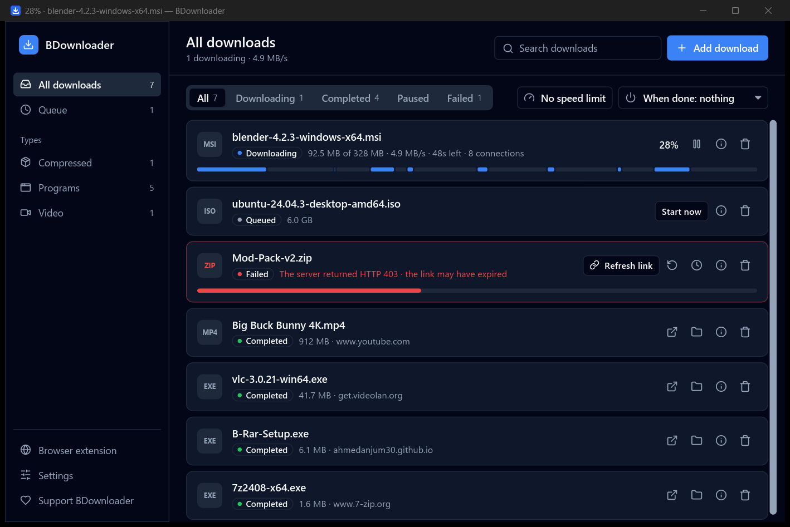
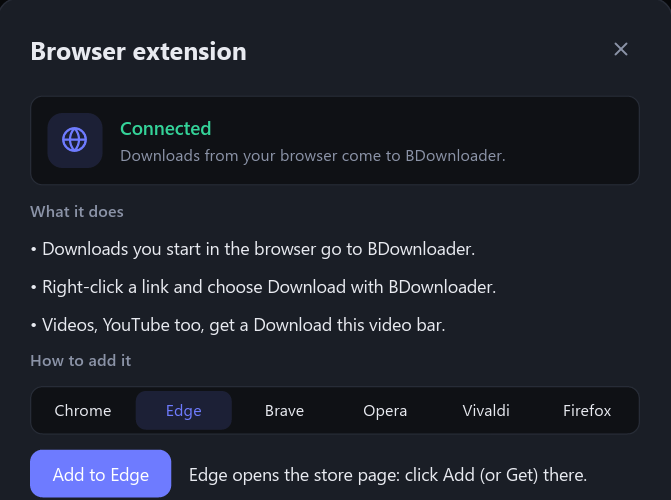

Downloads, done properly.
BDownloader is a free, lightweight download manager for Windows. It downloads every file over several connections at once, pauses and resumes anything, and catches downloads and videos straight from your browser.

Everything a download manager should do
Fast where it counts, quiet everywhere else.
Many connections at once
Each file is split into parts that download side by side. BDownloader adds connections while the server keeps up, and a finished connection takes over half of the biggest remaining part.
Pause and resume anything
Stop a download and continue later, even after closing the app or restarting the PC. Link expired? Give it a fresh one and it continues where it stopped.
Works with your browser
Downloads you start in Edge, Chrome, Firefox, Brave, Opera or Vivaldi go to BDownloader, even ones that need you to be signed in, private windows included.
Download videos
A "Download this video" bar appears on videos: video files, HLS streams, and YouTube in any quality up to 4K, saved as one MP4. No extra tools needed.
Speed limit
Cap all downloads together from the top bar, so a big download doesn't slow down everything else. It applies instantly.
Small and light
A native app written in Rust: no bundled browser engine, little memory while idle, and it keeps itself up to date while staying out of your way in the tray.
One extension, every browser
Add the extension once and downloads go to BDownloader by themselves. Right-click any link for "Download with BDownloader". If a site won't give BDownloader the file, your browser downloads it instead, so nothing is ever lost.
- Edgefrom the Edge Add-ons store
- Firefoxone click from inside BDownloader, signed by Mozilla
- Chrome, Brave, Opera, Vivaldia few guided steps inside BDownloader

Questions
Didn't find yours? Ask in Discussions.
Is BDownloader free?
Yes, for personal and other non-commercial use, with every feature included. There are no ads and no paid version. If you'd like to support it, there's Patreon.
Windows says "Windows protected your PC". Is it safe?
BDownloader isn't code-signed yet, so Windows doesn't know the publisher and warns about it. Click More info, then Run anyway. The installer is built from the public source code by GitHub's release workflow, and you can check it against the SHA256SUMS.txt file on each release. Updates installed by BDownloader itself don't show the warning.
Which browsers does it work with?
Edge, Chrome, Firefox, Brave, Opera and Vivaldi. Open Browser extension in BDownloader for the steps; Edge and Firefox take a single click.
Can it download YouTube videos?
Yes. Play the video for a few seconds and a "Download this video" bar appears on it, listing every quality up to 4K and sound only. Picture and sound are joined into one MP4 that any player opens. Live streams aren't supported.
Do I need admin rights to install it?
No. It installs for your Windows user only, in your own AppData folder, and can be removed from Installed apps like any program.
Can I use it at work?
BDownloader's license (PolyForm Noncommercial) allows personal use and use by charities, schools and public institutions, but not commercial use. For commercial use, get in touch on GitHub.
Does it send my data anywhere?
No. It connects only to the servers of the files you download, and to GitHub to check for updates. The browser extension talks only to the app on your own computer. See the privacy policy.
Can I install it from the command line?
Download the installer and run it with /VERYSILENT for a silent install. BDownloader is also on its way to winget, Windows' package manager.
Ready when you are
Download BDownloader and add the extension to your browser. It takes a minute.